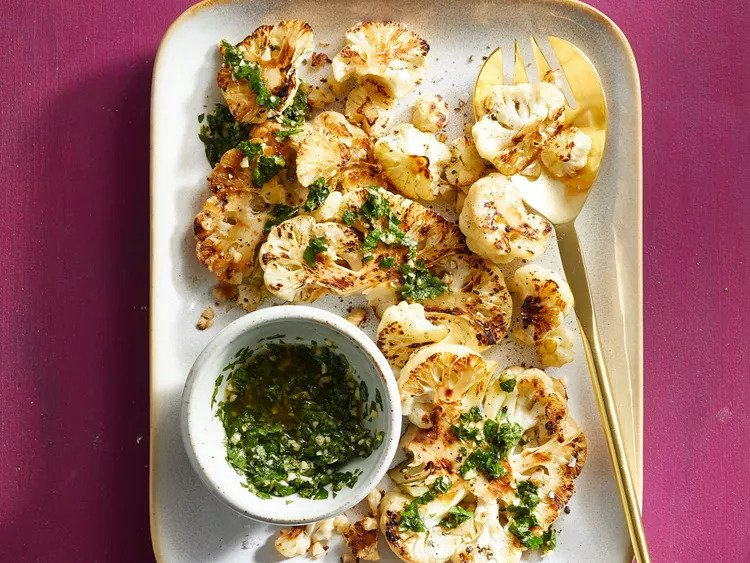

Cauliflower Steaks with Gremolata
These simple cauliflower steaks make a delicious side dish when served with gremolata.

Ingredients
For the cauliflower steaks
- 1 (1.5 pound) head cauliflower
- cooking spray
- 2 tablespoons water
- ¼ teaspoon salt
- ⅛ teaspoon ground black pepper
For the Gremolata
- 2 tablespoons chopped fresh parsley
- 2 tablespoons extra-virgin olive oil
- 1 teaspoon lemon zest
- 1 teaspoon lemon zest
- 2 cloves garlic, minced/li>
- 1 teaspoon lemon zest
- ⅛ teaspoon ground black pepper
Directions
- Slice cauliflower head into 3/4-inch-thick steaks. Heat an extra-large skillet over medium-high heat and spray with cooking spray. Working in batches, add cauliflower, reduce heat to medium, and cook until browned and lightly charred, about 5 minutes. Flip and add water; cook, covered tightly, until fork-tender, 5 to 7 minutes. Season with salt and black pepper.
- For gremolata, stir together parsley, olive oil, lemon zest, lemon juice, minced garlic cloves, salt, and pepper. Serve with steaks.